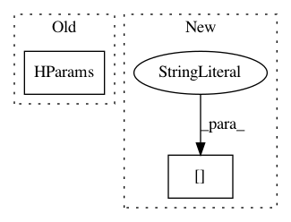

74c062162194fa2d89e85f2a99bf4c71e66d5654,examples/tsf/tsf_trainer.py,TSFTrainer,__init__,#TSFTrainer#Any#,25
Before Change
class TSFTrainer:
TSF trainer.
def __init__(self, hparams=None):
self._hparams = HParams(hparams, self.default_hparams(),
allow_new_hparam=True)
@staticmethod
def default_hparams():
return {
After Change
if FLAGS.config:
flags_hparams["config"] = FLAGS.config
if FLAGS.model:
flags_hparams["model"] = FLAGS.model
self._hparams = HParams(hparams, flags_hparams, allow_new_hparam=True)
In pattern: SUPERPATTERN
Frequency: 3
Non-data size: 2
Instances
Project Name: asyml/texar
Commit Name: 74c062162194fa2d89e85f2a99bf4c71e66d5654
Time: 2018-04-02
Author: zichaoy@cs.cmu.edu
File Name: examples/tsf/tsf_trainer.py
Class Name: TSFTrainer
Method Name: __init__
Project Name: tensorflow/tcav
Commit Name: f4c9f50e280b7994badeb22cee14111f7077d000
Time: 2020-09-04
Author: markusmonz@googlemail.com
File Name: tcav/tcav_test.py
Class Name: TcavTest
Method Name: setUp
Project Name: tensorflow/tcav
Commit Name: f4c9f50e280b7994badeb22cee14111f7077d000
Time: 2020-09-04
Author: markusmonz@googlemail.com
File Name: tcav/cav_test.py
Class Name: CavTest
Method Name: setUp